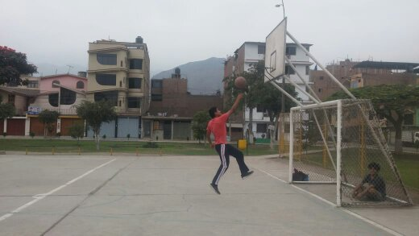

Estudiante de la UTEC
Cachimbo 2020-1
Henry Arturo Espinoza Vargas 202010592
| Nombre | Apellido | Número | Ciudad | Distrito | Lugar | Juego online | Team | Años |
|---|---|---|---|---|---|---|---|---|
| Henry | Espinoza | 963184803 | Lima | Comas | Urbanización el Parral | Dota2 | Haev | 5 |
Cachimbo 2020-1
Henry Arturo Espinoza Vargas 202010592
Mi nombre es Henry Arturo Espinoza Vargas , todo comenzó el 14 del 2001 a las 8:50 el día en el que pude ver la luz por primera vez en mi
vida, nací en Huacho el cual solo estuve 4 meses ya que luego me llevaron a vivir en la sierra, Huaraz para ser mas exactos
por algunos problemas que se dieron.
El tiempo que estuve viviendo en la sierra fue muy interesante porque en el transcurso del tiempo conocí lugares muy hermosos
y personas muy interesantes, a los 6 años estudié en el colegio La libertad y la verdad que no llegué a terminar mi primaria en ese colegio
ya que en sexto de primaria me movieron al colegio Albert Einstein.
En este colegio solo llegué a estudiar hasta el primer año de secundaria por la razón que luego me vine a vivir a Lima .
Inicié mi segundo de secundaria en el colegio Jesús Obrero y la verdad fue un colegio muy interesante porque entré sabiendo ciencias y humanidades
sin embargo salí con una carrera técnica que haré mención luego.
En este colegio la mayoria de mis compañeros eran personas mayores porque si querias ingresar debias de cumplir ciertos requisitos y uno de ellos
era comenzar desde segundo de secundaria sin importar en que grado ibas en tu otro colegio además que fue un colegio de puros hombres sin embargo
despues de un tiempo empezaron a ingresar mujeres aunque yo ya estaba terminando la secundaria, lamentablemente.
Hice mensión a todo eso porque esto fue un gran avance para mi ya que al estar en contacto con personas mayores se me habría más posibilidades de
conocer otros tipos de pensamientos ya sean inmaduros o maduros, bueno en el quinto año de secundaria ya finalizando, tuve la mejor experiencia con
mis amigos porque hicimos un almuerzo de despedida y la pasamos increiblemente, además fue la última vez que nos veriamos todos juntos.
Terminé el colegio en el año 2017 , luego empecé a prepararme en la academia ya que queria ingresar a la universidad de la san marcos aunque en el
primer año tuve algunos problemas personales y no me fue tan bien sin embargo en el segundo año que me iba preparando me faltaron pocos puntos para
ingresar así que decidí estudiar un poco más para intentar una vez más.
En ese transcurso mi primo me hizo mención de la universidad UTEC y yo mismo quise comprobar todo lo que el me había contado acerca de esta universidad
así que participé en su OPEN DAY donde la mayoria de universidades privadas muestran como es la universidad en si y la verdad que me sorprendí un montón
al verlo por primera vez ,tanto su infraestructura y la enseñanza en parte, aunque yo todavia seguia interesado en la universidad san marcos así que decidí
esperar por su examen de admisión pero no me imaginaba que pasaría algo tan grande y grave en el mundo , pues sí estoy haciendo mención a la pandemia sobre
el coronavirus o también llamado covid-19, bueno en ese caso solo tenía dos opciones: esperar por el examen de admisión lo cual era algo indefinido por la
situación de la cuarentena o ya no perder más tiempo.
Bueno decidí estudiar y porque no mejor estudiar en la UTEC y la verdad que me pareció y sigue pareciendo una buena elección por parte mía.
En la actualidad tengo 19 años y estoy estudiando la carrera de Ing.industrial en la universidad de ciencia y tecnología "UTEC" y es mi primer siglo, el cual
me parece que tendré un gran recorrido.
El es mi conejo llamado REX aunque no se si es un conejo porque más se comporta como un perro,siempre que regreso de algún lugar me espera ,es muy adorable.
Mi hermano lo trajo un día aunque sinceramente si parecia un perrito cuando aun tenia unas semanas de recién nacido, eso si era muy juguetón supongo que los que
tienen un conejo como mascota me entenderán todo lo que estoy diciendo.

Me encanta tocar la guitarra, dibujar, jugar futbol, practicar la calistenia, la actuación, sobre todo el basquet es mi deporte favorito.
Ciencias de la computación "ICC"
Yamilet Serrano
ConocelaEstudié Mecánica General en el colegio Jesús Obrero